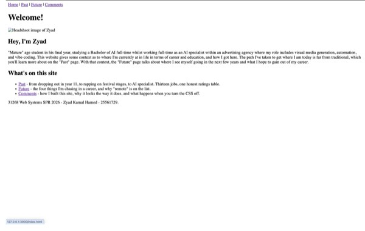
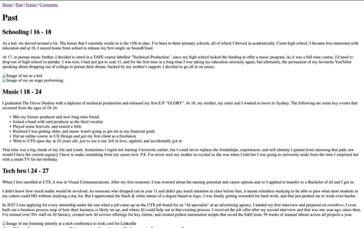
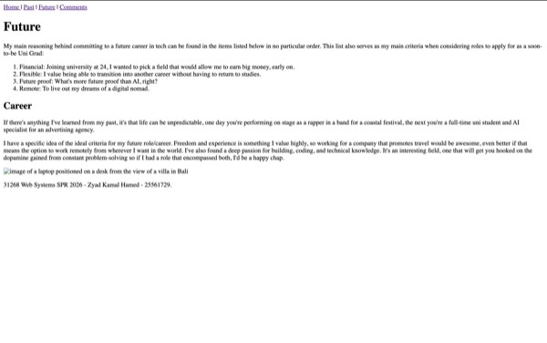
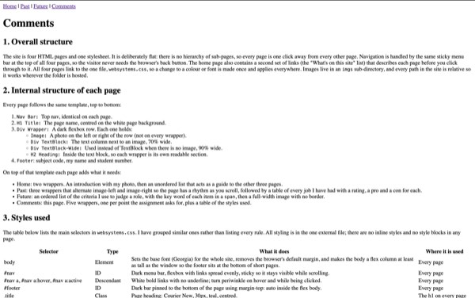

The site is four HTML pages and one stylesheet. It is deliberately flat: there is no hierarchy of sub-pages,
so every page is one click away from every other page. Navigation is handled by the same sticky menu bar at the
top of all four pages, so the visitor never needs the browser's back button. The home page also contains a
second set of links (the "What's on this site" list) that describes each page before you click through to it.
All four pages link to the one file, websystems.css, so a change to a colour or font is made once and
applies everywhere. Images live in an imgs sub-directory, and every path in the site is relative
so it works wherever the folder is hosted.
Every page follows the same template, top to bottom:
Nav Bar: Top nav, identical on each page.H1 Title: The page name, centred on the white page background.Div Wrapper: A dark flexbox row. Each one holds:
Image: A photo on the left or right of the row (not on every wrapper).Div TextBlock: The text column next to an image, 70% wide.Div TextBlock-Wide: Used instead of TextBlock when there is no image, 90% wide.H2 Heading: Inside the text block, so each wrapper is its own readable section.Footer: subject code, my name and student number.On top of that template each page adds what it needs:
span, then a full-width image with no border.
The table below lists the main selectors in websystems.css. I have grouped similar ones rather than
listing every rule. All styling is in the one external file; there are no inline styles and no style
blocks in any page.
| Selector | Type | What it does | Where it is used |
|---|---|---|---|
| body | Element | Sets the base font (Georgia) for the whole site, removes the browser's default margin, and makes the body a flex column at least as tall as the window so the footer sits at the bottom of short pages. | Every page |
| #nav | ID | Dark menu bar, flexbox with links spread evenly, sticky so it stays visible while scrolling. | Every page |
| #nav a, #nav a:hover, #nav a:active | Descendant | White bold links with no underline; turn iris on hover and while being clicked. | Every page |
| #footer | ID | Dark bar pinned to the bottom of the page using margin-top: auto inside the flex body. |
Every page |
| .title | Class | Page heading: Courier New, 30px, iris, centred. | The h1 on every page |
| .heading-l, .heading-c, .heading-r | Class (grouped) | Section headings: Courier New, 25px, platinum. One shared rule for the look, then three one-line rules that only set left, centre or right alignment. | Every h2 |
| .bodyL, .bodyC, .bodyR, .body_black | Class | Paragraph and list text. White on the dark wrappers with left, centre or right alignment; the black variant is for text on the white page background. | All body copy |
| .wrapper | Class | The dark content block. A flex row that spaces its children evenly and centres them vertically. | Every content section |
| .textblock, .textblock-wide | Class | The text column inside a wrapper: 70% wide when it shares the row with an image, 90% when it is on its own. | Inside every wrapper |
| .images, .images_no_border | Class | Photo sizing. .images is 30% wide with a fixed height and object-fit: cover so portrait and landscape photos crop to the same shape, with a purple frame. The no-border version is for the full-width image on the Future page. | Home, Past, Future |
| .custom-table, .custom-table th, .custom-table td | Class + descendant | Light table with collapsed borders, deep iris header row with white text, and padded cells. | Past (jobs), Comments (this table) |
| .future-list, .future-list li | Class + descendant | Centres the ordered list as a block while keeping the items left-aligned so the numbers line up. | Future |
| .highlight | Class | Bold iris for the lead-in word of a list item: the light tint on the dark blocks, the deep shade on the white Future page. | Future, Comments |
| .site-guide, .site-guide li, .site-guide a, .site-guide a:hover | Class + descendant | The page guide on the home page: bullets removed, a thin iris rule between items, page names in Courier light iris that turn white on hover. | Home |
Layout: The site is built on flexbox, which I learned from css-tricks.com (see References). Each section is a dark block on a white page, which keeps the reading width sensible on a 1024 by 768 screen and makes each section feel like its own card. On the Past page the image alternates sides from one wrapper to the next so the eye zig-zags down the page instead of reading three identical rows. The nav is sticky, so it is always available on the long Past page, and the footer is pushed to the bottom of the window on short pages so the layout does not look unfinished.
Colour: The palette is two near-blacks, white, platinum and one accent, iris. Night is the nav and footer, jet black is the content wrappers, and the slight difference between them separates the frame of the page from its content without adding another colour. Every text and background pairing was checked against the WCAG contrast guideline of 4.5 to 1. Platinum on jet black reaches 11.9 to 1 and white on night 18.5 to 1. The one problem was the accent: the mid iris that works for the 30px page title (3.6 to 1, which passes the 3 to 1 rule for large text) only reaches 3.9 to 1 as normal text on jet black and 3.6 to 1 on white, so it fails for body-size text on both. No single mid-tone passes on both a dark and a light background, so the accent is split into a light tint for text on the dark blocks (5.0 to 1) and a deep shade for text on white and for the table header backgrounds (6.3 to 1 under white text). The mid iris is kept for the title, the nav hover, image frames and borders.
| Colour | Hex | Used for |
|---|---|---|
| Night | #0E141B | Nav, footer, dark text on white |
| Jet black | #272D2D | Content wrappers |
| White | #FFFFFF | Page background, nav and footer text |
| Platinum | #ECECEC | Headings and body text on dark, table cells |
| Iris | #8B7BD8 | Page title, nav hover, image frames, borders |
| Light iris | #9E91DE | Accent text and links on dark |
| Deep iris | #5F4ACA | Accent text on white, table header background |
Typefaces: Two only. Courier New for the title and section headings, because the monospace look suits a site by an AI student and gives it some character. Georgia for everything else: it was designed for screens and has a larger x-height than Times, so white text on a dark background stays readable at 16px. Setting Georgia once on body means the nav, tables and footer inherit it. An earlier version accidentally used five fonts, because the table and footer had no font set and fell back to the browser default, which is exactly the kind of inconsistency a stylesheet is meant to prevent.
Alt text: Every image has an alt attribute that describes what is in the
picture rather than the fact that it is a picture, since a screen reader already announces it as an image. The photos
of me are described by what I am doing in them (as a kid, performing on stage, at a conference), and the laptop
photo on the Future page describes the scene because that scene is the point of the image. If an image fails to load,
the alt text appears in its place so the section still makes sense.
Without CSS or images: I tested this in Chrome by temporarily renaming
websystems.css so the browser could not find it, and turning images off in Chrome's site settings, then
reloading each page. The screenshots below show all four pages in that state. The site is still completely usable.
The nav bar becomes a plain row of underlined links at the top of every page, separated by the pipe characters that
are in the HTML, so you can still reach every page without the back button. The page title and section headings keep
their order and their default sizes, so each page still has a clear structure, and the paragraphs read top to bottom
in the same order as the styled version. The jobs table on the Past page is still a table with a header row, and the
lists on the Home and Future pages are still numbered or bulleted. Where each photo would be, the browser shows its
alt text instead ("Headshot image of Zyad", "Image of me as a kid", and so on), which is enough to know
what you are missing without breaking the flow of the text. The only real loss is cosmetic: the dark blocks, the
alternating left and right layout on the Past page, and the two typefaces are gone, because all of that lives in the
stylesheet. It works this way because the pages use semantic elements (nav, h1,
h2, table, ul, ol, footer) rather than generic
div tags for everything, so the structure lives in the HTML and the CSS only decorates it.




Other checks. The site uses no JavaScript, so nothing depends on it. All text and background pairings meet the WCAG AA contrast ratio for their text size. Links keep the browser's keyboard focus ring so the site can be navigated with the Tab key. All file names and paths are lower-case and relative, and every image is under 100 KB.